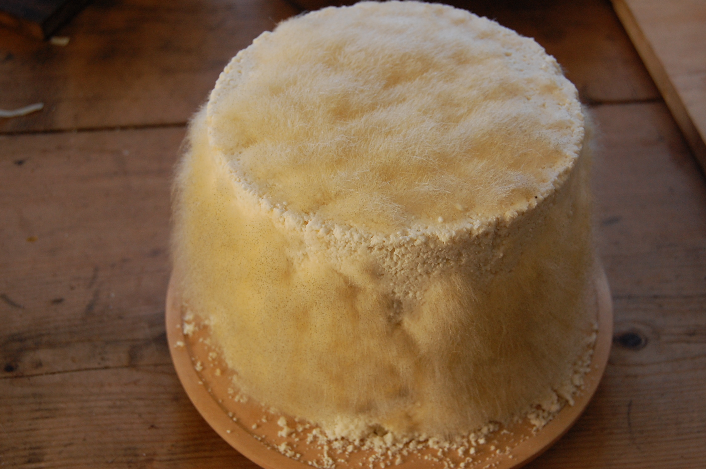

v i k i n g - s t y l e c h e e s e

ingredients
- 10 litres of unpasteurized milk
- 5 litres of old-fashioned milk
- cheese rennet
- salt
- brine
- spices (personal taste)
- mead
- a bowl
- colander
- towel
- tablespoon
steps
- heat 10 litres of unpasteurized milk to 38 degrees celsius in two batches.
- afterward pour 2 tablespoons of cheese rennet into each milk batch.
- when the rennet has been added the mix should be left to solidify for 30 minutes.
- to remove the whey from the curd the mass is poured into a colander that is rotated around the edge.
- the now fairly solid curd is placed in a towel and squeezed until all the whey is removed.
- repeat the above with 5 litres of old-fashioned milk.
- add salt and your desired spices before the curd is completely dry.
- when the curd is ready it should be swept into a dry towel and placed in a mould.
- towel should be changed daily. the cheese should be turned every morning and evening for at least 3-4 weeks.
- if there is any mold it should be cut off immediately. keep the cheese on plates with weights on.
- the cheese should be preserved for at least 5 weeks before it is ready to be eaten.
back